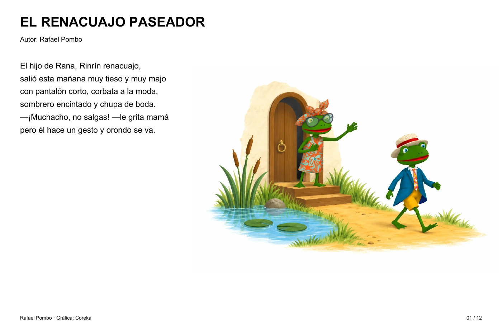

Personajes, color y ritmo para acompañar el cuento de Rafael Pombo. Una secuencia de doce láminas que lleva a Rinrín desde su salida de casa hasta el desenlace, con el texto integrado en cada página.
Autor: Rafael Pombo · Gráfica: Coreka
